| Samedi
21 décembre
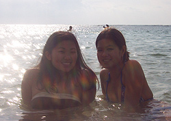Encore
moi!! Achalant n'est-ce pas? Enfin bref, vaut mieux taper nos récits
quand ils sont encore frais en mémoire. Aujourd'hui après
avoir envoyé mes derniers courriels je suis allé me baigner
comme prévu. L'eau était très rafraichissante. Stéphanie
la trouvais froide je crois mais moi pas du tout! Une fois qu'on est dedans
on est super bien. Le soleil nous a quittés à quelques reprises,
il y a eu quelques gros nuages noirs mais le vent les a vite repoussés
loin de l'ile. En passant, pour les petits détails techniques,
présentement je suis sur l'ile d'Oahu, et aujourd'hui c'est à
Waikiki que je suis allé me balader en vélo et me baigner.
J'ai profité de ma baignade pour photographier deux petites perles
hawaiiennes que j'ai trouvées dans l'océan. =) Au début
j'étais seul quand je suis arrivé à la beach, mais
j'ai lâché un coup de fil à Steph sur son cellulaire
et elle s'y rendait et Huguette aussi, alors elles sont venues me rejoindre.
Nous y sommes restés quelques heures puis après un bref
repos et avoir enfilé nos espadrilles, nous sommes partis escalader
le cratère du volcan black diamond, si je me souviens bien du nom
exact.
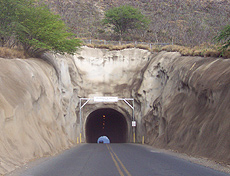Encore une
fois, j'ai eu le souffle coupé par la beauté du paysage.
Au départ nous passons dans un tunnel creusé à même
la roche volcanique, et cela ressemble fort à l'intérieur
d'une maison de pierrafeu! Une fois à l'intérieur du cratère,
il y a une base militaire et un chemin qui escalade le cratère
pour monter jusqu'au sommet. Une bonne marche, ca fait du bien et c'est
bon pour ma ligne!! Ca monte tout le long et y'a un espèce d'escalier
qui ne finit plus. On doit passer par quelques tunnels creusés
dans le roc, et une chance qu'il y a un garde pour se guider car sinon
on ne verrait absolument rien!! C'est le noir total à l'intérieur.
On peut louer ou acheter une lampe de poche à l'entrée mais
c'est pas vraiment nécessaire. Arrivé en haut, le paysage
est époustouflant!! Sur la photo de droite vous pouvez voir ou
nous étions situés après avoir escaladé au
sommet. Imaginez la vue! De tout là haut, on voit les surfeurs
au loin qui ont l'air de miniscules fourmis sur les immenses vagues. 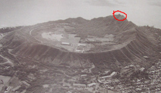Si
on fait face à l'océan, à notre droite on apercoit
Waikiki et la ville d'Honolulu avec tous ses grattes-ciels et hotels de
luxe. A gauche c'est des montagnes avec une couche de nuages qui caresse
le dessus des montagnes. Au milieu on apercoit les milliers de maisons
des habitants de l'ile. Je suis décu par mes photos car j'ai dû
mettre mon doigt sur l'objectif à un moment donné et la
plupart de mes photos sont floues et y'a un gros spot blurry. Enfin, c'est
pas grave, je vais essayer d'y retourner de toute facon. Ca coûte
seulement un dollar et c'est un bon exercice. De plus je peux m'y rendre
facilement en vélo, c'est tout près de chez Stéphanie.
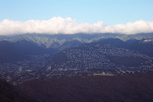 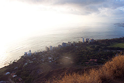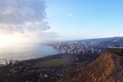
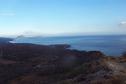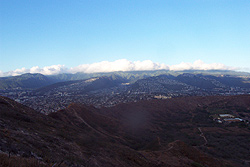
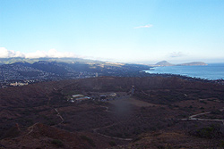
Ce soir nous avons fait cuire du poisson dehors sur le BBQ avec des patates
molles et des patates mauves, qui sont typiques d'ici... C'était
délicieux. =)
Dimanche
22 Décembre
Ce matin nous nous sommes levés très tot pour aller faire
une ballade de 4 heures à pied dans les montagnes! C'est de l'exercice,
mais ca fait tellement du bien! J'ai un peu mal aux pieds mais ca valait
la peine de marcher autant. Je vais la perdre ma bedaine! On est montés
au sommet de la montagne et les paysages étaient assez hallucinants
merci! J'insère à l'instant des photos au bas de ce paragraphe!
J'ai pu jouer à tarzan avec les lianes, elles étaient assez
solides! Après ca je suis retourné me baigner à Waikiki
avec le vélo à Steph et puis je me suis rendu ici au café
internet. Je dois me dépecher car les autres m'attendent pour aller
souper, dans un petit resto grec! Ensuite on prépare nos valises
pour demain pour aller camper!
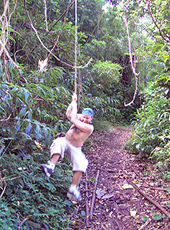
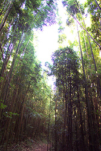 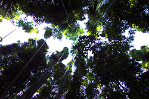
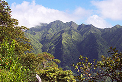 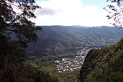
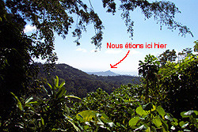
Lundi très tot (demain si vous lisez ceci aujourd'hui Dimanche)
nous prenons l'avion pour Kauai (je suis pas sûr que ca s'écrit
comme ca, dans mon dernier courriel j'ai dit Kawaii parce que c'est comme
ca qu'on le prononce ici mais pour l'écrire je pense que j'ai même
pas les caractères nécessaires sur mon clavier. :) Les noms
hawaiiens sont très bizarroides. Donc nous allons camper là-bas.
Stéphanie connait des endroit quasi-vierges ou il n'y a presque
aucun touristes et pleins d'animaux en libertés. Il y a aussi de
superbes plages désertes et des chutes d'eau dignes du film "the
beach". Nous visiterons aussi un endroit habité par des hippies
nudistes, ca aussi ca risque d'être dépaysant. Nous y resterons
environ 4 jours donc ne vous posez pas trop de questions si vous n'avez
pas de mes nouvelles pendant plusieurs jours. Là-bas il n'y a pas
d'internet et de toute facon, je n'apporterai certainement pas mon ordinateur
en camping!! Je crois bien que je vais apprécier ces jours de camping.
Mettons que c'est assez différent des Noel que j'ai vécus
jusqu'à présent!! =)
Je profite donc de l'occasion pour vous souhaitez à tous un joyeux
noel!! Je penserai à vous! Je vous aime tous ma gang de pas chanceux!
=) A part toi etienne qui est maintenant a Acapulco!
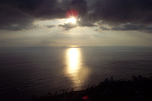En passant,
jusqu'ici j'envoie mes courriels à plusieurs personnes mais c'est
certain que j'oublie certaines personnes ou bien je n'ai pas leur adresse
de courriel. Par exemple je ne suis pas certain que j'ai la bonne adresse
à Carl... Carl si tu lis ca fais moi un signe!! Sinon Éric
ou Etienne s.v.p forwardez-lui!! Maman, toi aussi, je n'ai pas le courriel
à Pascale, alors ca serait bien si tu pouvais me le donner, et
peut-être aussi Christian au Lac? Qui tu veux finalement! Pour les
courriels que j'ai déjà envoyé et bien forwardez-vous
les bordel! =)
Je pense à vous, du Paradis terrestre! =P
Aloha, David xx
Partie
4 --> |